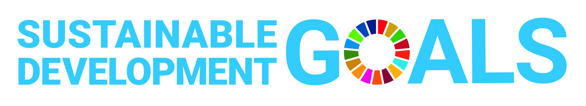
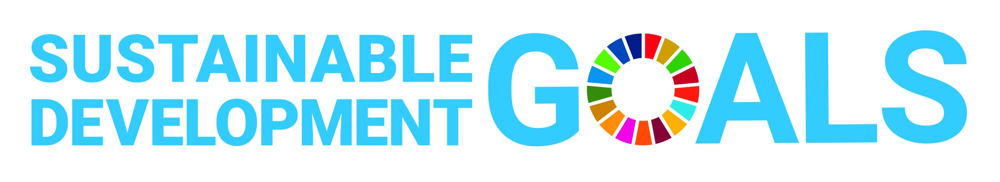

PROVIDING ACCESS TO EDUCATION
To build sustainable and impactful change, teachers must be empowered as leaders, and communities must become active partners in their children’s learning journey. Through our Empowering Teachers and Communities program, PED equips teachers with skills, tools, and confidence.
Teacher Training & Professional Development
Through Papuan Children’s Education (PED), we are committed to empowering teachers with the skills, confidence, and creativity they need to become transformative educators. Our Teacher Training & Professional Development program ensures that teachers whether experienced educators or community volunteers are fully equipped to deliver quality, inclusive, and culturally relevant education.
Community Involvement in Education
In Papua, education is not equally accessible to all children. Factors like gender, disability, economic hardship, remote location, and cultural identity create deep educational gaps. Many girls drop out early due to cultural expectations. Children with disabilities often have no access to specialized support. Indigenous children who speak local languages at home face language barriers in the classroom.
TEACHERS REQUIREMENT
We are looking for passionate, dedicated teachers who are ready to bring knowledge, creativity, and hope to children in some of Papua’s most remote areas. If you believe that education can transform lives and you’re ready to be part of this meaningful journey, apply now to become a PED teacher!
OUR SPONSORS AND PARTNERS
 
